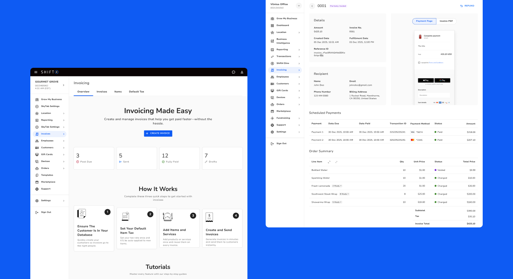
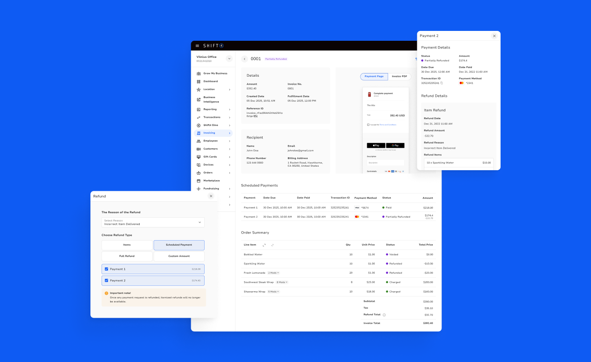
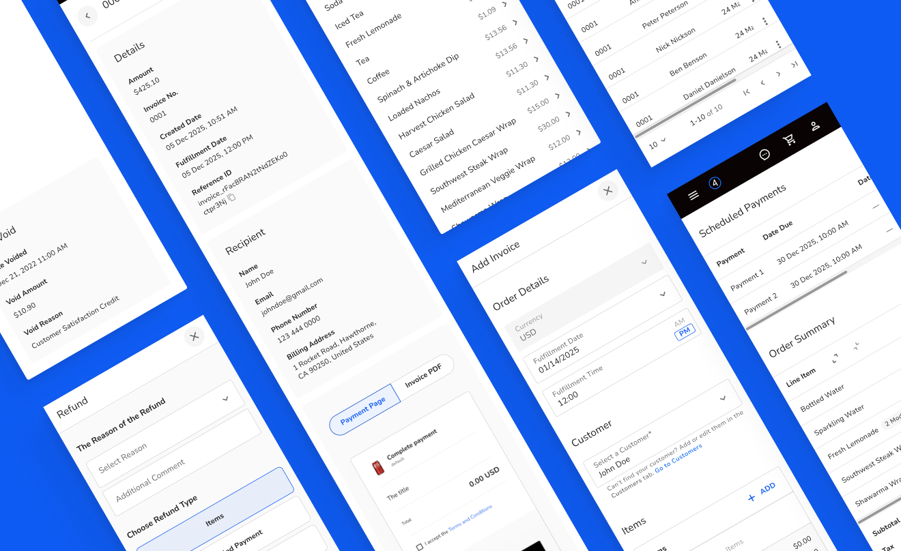
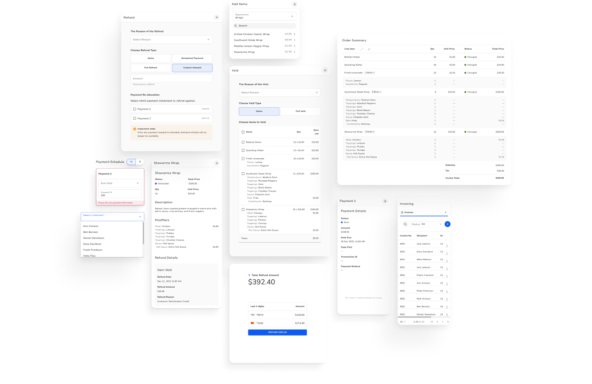
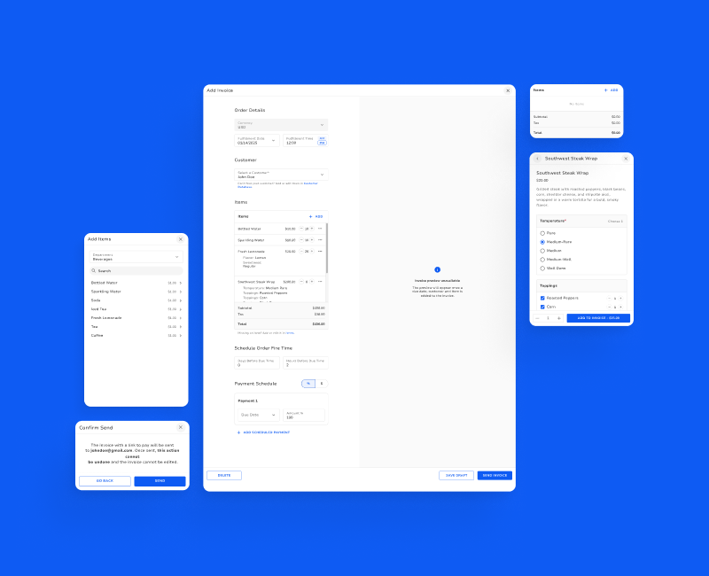
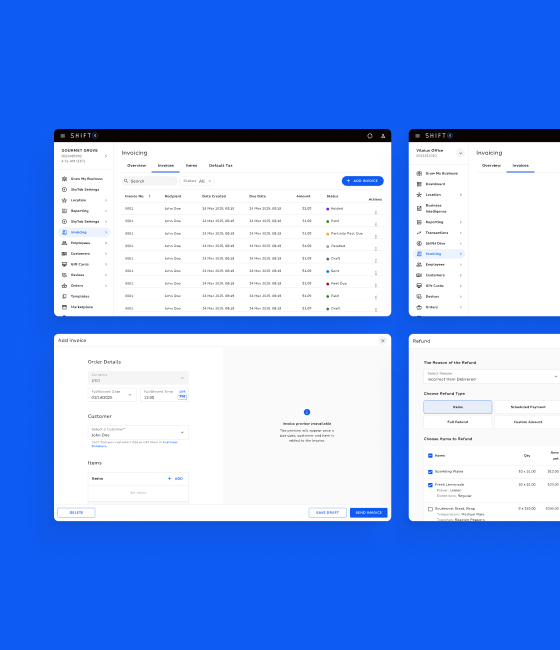

// Invoicing
Project Description
This project’s goal was to design an end-to-end catering invoicing tool built into Shift4’s back office tool. It moves restaurants off disconnected systems and manual tracking into one workflow covering the full catering journey, from building an order off the real menu to scheduling deposits, firing the order to the kitchen, and handling payments, voids and refunds.

Problem
Shift4 had no invoicing tool. That became a real gap when restaurants joining through an acquisition relied on invoicing to run their catering and large orders. Without it, they couldn’t migrate to Shift4 without losing a core part of how they got paid.
The hardest design problem was money that changes over time. One invoice might take a deposit, collect a second payment, void two trays of wraps, then issue a partial refund. Every state had to make sense to the operator, the customer, and the reporting behind it.

Research
I analyzed the flows of four competitors: Square, Toast, Lightspeed and SpotOn.
Square: The fastest invoice creation, with payment schedules, cards on file, share links, and reminders. But a deposit couldn’t be refunded without canceling the whole invoice, and nothing was built for catering. Opportunity: match Square’s speed, and support deposit refunds without forcing a cancellation.
Toast: The closest restaurant competitor, with very flexible payment schedules. In our testing, that flexibility created more potential for broken states. Opportunity: keep the flexibility, but make broken states impossible.
Lightspeed Retail: Simple and predictable. Only drafts could be deleted, and sent invoices could be edited or canceled until paid. Opportunity: borrow its clear status model and firm rules.
SpotOn: Strong defaults, including branding, due dates, and automatic reminders, plus a clean “Add Payment” flow for payments taken outside the invoice. Opportunity: set smart defaults, and make outside payments easy to record.
Key insight: Competitors were either flexible but prone to broken states, or safe but rigid. Customers expect every payment for an event to live under one invoice number. On the back end, that meant a parent/child structure, with each payment linked to the parent invoice. Our goal was to keep Toast-level flexibility while making sure a sent invoice could never end up confusing or broken.

Approach
This project was split into two phases. Phase 1 covered the invoicing basics for Customer Hub merchants that did not have Shift 4’s POS Workstation. Phase 1 gave merchants the ability to create, draft, send and search invoices, with tax settings and a stats landing page. Phase 2 took on the catering-specific problems for merchants that do have Shift4’s POS, and my research on competitors shaped how I handled them.
The creation flow pairs the form with a live preview of what the customer will receive. Fulfillment timing and kitchen fire time replace a generic due date. Items are built from the POS menu, including modifiers. Payment schedules make deposits easy to set up, and the edit rules are locked in before the invoice is sent.
Because sent invoices can’t be edited, every change after sending goes through voids and refunds. I designed five correction flows: item and full voids for unpaid invoices, and item, payment, custom-amount and full refunds for paid ones. They all share one pattern modelled on the POS. The operator gives a reason, picks what to reverse from an itemized list that includes modifiers, and confirms against a running total. Clear rules keep the ledger reconcilable.
Every flow was designed for desktop, mobile and the POS web view.

Outcome
Invoicing is built directly into the tools restaurants already use, and made specific to catering. That lets the design address each problem identified in the briefs and competitor research:
- Removes duplicate data entry. Customers and menu items come from the restaurant’s existing databases and sync with the POS, so operators stop rebuilding every order in a separate system.
- Prevents the broken states seen in competitors. Sent invoices stay locked, and all corrections go through five void and refund flows with clear rules. This avoids the Toast problem where editing a sent invoice left merchants stuck with payments they couldn’t remove.
- Makes deposits trustworthy for finance. Scheduled payments count as a liability until they’re redeemed, and each deposit links to its redemption through a unique ID. Owners can see outstanding deposits on each invoice instead of reconciling them by hand.
- Connects invoices to the kitchen. Fulfillment timing, kitchen fire time and full modifier support mean the invoice the customer pays matches the order the kitchen prepares.
- Keeps training close to zero. Item builders and refund screens mirror the POS patterns staff already use.
The project was cancelled before Phase 2 went into development, so these outcomes were never measured with real merchants. The prototype was ready to test against the KPIs defined up front: task success rate, time on task, and drop-off rate on complex flows like partial deposit refunds.

